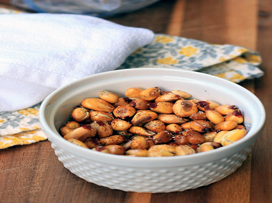
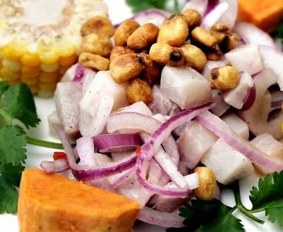
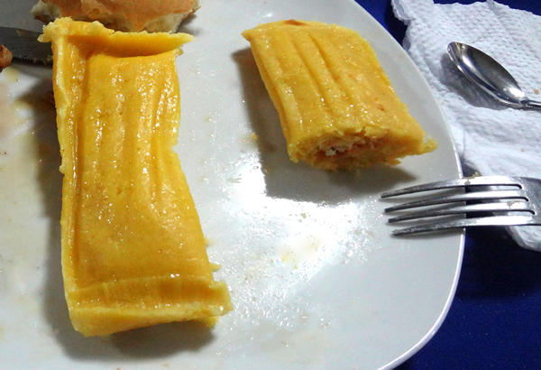
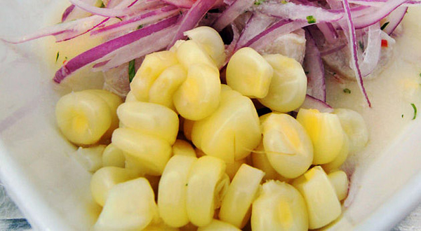

Some of the Most Common Sides and Snacks of Chiclayo:
Cancha:known as the Peruvian version of "Corn Nuts", this common snack is made from a type of corn called "maiz chulpe". When the kernels are heated, the inside does not burst out like popcorn, but the kernel becomes puffy and toasted, leaving it with a crunchy, starchy taste. Served lightly-salted, cancha is frequently served before meals or alongside ceviche, and can be quite the addicting snack!

| Causa Rellena con Pollo (Chicken salad with yellow potatoes) |
| During Peru's Colonial Period, many of the native Peruvian foods were combined with foods brought over from Europe, creating the unique Peruvian cuisine that we see today. Causa Rellena con Pollo is one of these hybrid dishes! It is a popular summer dish that layers mashed potatoes flavored with lime juice and aji pepper, with chicken salad. These layers are typically in the form of a rectangle, with olives, cilantro, and slices of hard-boiled eggs placed on top. This typical dish is served cold, and is an interesting yet delicious mix of flavors found in the region. |
| Ceviche |
| Ceviche is one dish that you CANNOT leave without trying! It involves chunks of raw fish "cooked" with acid citrus juices (like lemon and lime), served with onions, and often spiced with aji or chili peppers. There are many different types of ceviche, with the most popular being shrimp, octopus, sea bass, and mixed (containing a variety). As the acidic juice does not cook the fish as well as heat does, it is important to eat at trustworthy locations to ensure that the fish is fresh. Dating back to the Incan time period, ceviche is a food that has been around for a long time, and is boasted about by the local people! |

| Humitas (Corn Tamales)) |
| Savory "cakes" made of freshly-ground corn, salt, and queso fresco. There are many different variations of these– some of the more savory versions contain meat, and some of the sweeter versions contain ingredients like cinnamon and raisins. They are usually steamed or boiled, then wrapped in corn husks and served. |

| Papa la Huancaína (Potatoes with cheese sauce and spices) |
| This is another very popular dish in Peru, and is a staple for the local people. It includes a creamy, spicy yellow sauce called Huancaína poured over boiled yellow potatoes. It is complete with slices of hard-boiled egg, an olive, and lettuce. |
| Choclo |
| This corn, commonly called Peruvian corn or Cuzco corn, is a large-kennel corn that comes from the Andes. The kernels are chewier, starchier, and less sweet than other types of corns, and it is commonly served as a side to ceviche and other appetizers or entrees. |

| Anticuchos |
| Skewers of meat commonly flavored with garlic, aji, cumen, or other such spices. Though it can contain any type of meat, the most common is beef heart. You will often finds vendors grilling these on the streets, though we advise you consume with caution, as the meat could be spoiled! |
| Chifle |
| Chifle consists of thinly-sliced bananas that are fried and lightly salted. They are often sold by street vendors and corner stores, and resemble potato chips. |